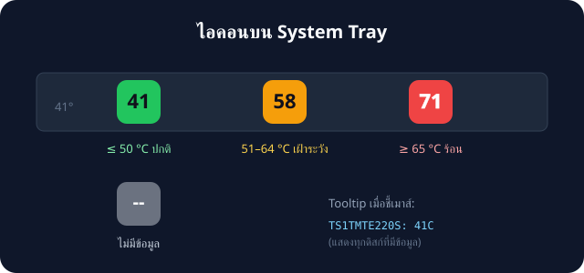

SSD Temperature Tray Monitor
Windows 10 / 11
Python ไฟล์เดียว
v1.25.0
ต้องการสิทธิ์ Admin
แอปเล็ก ๆ ที่แสดงอุณหภูมิ SSD ไว้บน system tray icon ของ Windows แบบเรียลไทม์ (อัปเดตทุก 1 วินาที) พร้อมสีเตือนเมื่อดิสก์ร้อนเกินไป
คุณสมบัติ Features
🔢 ไอคอนแสดงตัวเลข
อุณหภูมิของ SSD ที่ร้อนที่สุด อัปเดตทุก 1 วินาที
อุณหภูมิของ SSD ที่ร้อนที่สุด อัปเดตทุก 1 วินาที
💬 Tooltip ครบทุกดิสก์
ชี้เมาส์ที่ไอคอนเพื่อดูอุณหภูมิแยกตามดิสก์
ชี้เมาส์ที่ไอคอนเพื่อดูอุณหภูมิแยกตามดิสก์
🛡️ UAC อัตโนมัติ
ขอสิทธิ์ Administrator เองตอนเปิดโปรแกรม
ขอสิทธิ์ Administrator เองตอนเปิดโปรแกรม
📈 กราฟ real-time
ย้อนหลัง 30 นาที วาดใหม่ทุกวินาที
ย้อนหลัง 30 นาที วาดใหม่ทุกวินาที
🔔 แจ้งเตือนอุณหภูมิเกิน
≥ 65 °C ติดกัน 30 วิ + cooldown 5 นาที
≥ 65 °C ติดกัน 30 วิ + cooldown 5 นาที
⚙️ หน้า Settings
ปรับ polling/การเตือน/history เก็บลง config.json
ปรับ polling/การเตือน/history เก็บลง config.json
📦 มี .exe สำเร็จรูป
ผู้ใช้ไม่ต้องติดตั้ง Python
ผู้ใช้ไม่ต้องติดตั้ง Python
🔌 ไม่สน USB reader
แสดงเฉพาะ SSD ภายใน — ค่าถูกต้องเสมอ
แสดงเฉพาะ SSD ภายใน — ค่าถูกต้องเสมอ
เขียว ≤ 50 °C
ส้ม 51–64 °C
แดง ≥ 65 °C

ความต้องการ Requirements
| รายการ | รายละเอียด |
|---|---|
| ระบบปฏิบัติการ | Windows 10 / 11 |
| Python | 3.8 ขึ้นไป |
| Libraries | pip install pystray Pillow |
| สิทธิ์ | Administrator (แอปขอเองผ่าน UAC) |
วิธีใช้งาน Usage
ง่ายที่สุด: ดับเบิลคลิก dist\ssd_temp_monitor.exe
(หรือถ้ามี Python: start_ssd_temp_monitor.bat หรือ pyw ssd_temp_tray.py)
รอบแรกจะมีหน้าต่าง UAC ขึ้นมา กด Yes แล้วไอคอนอุณหภูมิจะปรากฏ ที่มุมขวาล่างของ taskbar — คลิกขวาที่ไอคอนเพื่อเปิด Show details, Show temperature graph, Show all disks (debug), Refresh now, Record history, Check for updates..., Settings... (ช่องทางอัปเดต stable/pre-release + ช่วงเวลาเช็ค), About หรือ Exit
📈 บันทึกประวัติ: เปิด Record history ในเมนู
โปรแกรมจะเก็บอุณหภูมิลง
%TEMP%\ssd_temp_history.csv
(30 นาทีล่าสุด) แล้วเปิด Show temperature graph เพื่อดูกราฟแบบ
real-time พร้อม min/max/avg — หรือตั้ง
SSD_TEMP_RECORD_HISTORY=1 ให้เปิดตลอด
🔔 การแจ้งเตือน: เมื่อดิสก์ร้อน ≥ 65 °C ติดต่อกัน 30 วินาที
จะได้รับ notification ของ Windows (กันตัวเลขกระโดดหลอก)
เตือนซ้ำไม่ถี่กว่าทุก 5 นาที — อุณหภูมิลดลงแล้วกลับมาร้อนใหม่
จะเริ่มนับใหม่เสมอ · เปิดโปรแกรมซ้ำไม่ได้ (รันได้ครั้งละ 1 อินสแตนซ์)
⚙️ Settings: ในเมนูคลิกขวา — ปรับ polling interval (1–60 s),
alert threshold (40–90 °C), sustain/cooldown, ความยาว history (5–240 นาที),
ขนาดไอคอน (16–128 px), โหมด high-contrast, ภาษา (en/th), ช่องทางอัปเดต
(stable/pre-release), ช่วงเวลาเช็คอัปเดต (5–1440 นาที) เก็บลง
%APPDATA%\SSDTempMonitor\config.json มีผลทันทีทุกค่า
(รวมถึงขนาดไอคอนและ poll interval — ไม่ต้องรีสตาร์ท) · ปุ่ม ใช้ค่า
= บันทึกโดยไม่ปิดหน้าต่าง · ลบไฟล์เพื่อรีเซ็ต
💡 ตั้งให้รันตอนเปิดเครื่อง: กด
Win+R พิมพ์
shell:startup แล้ววาง shortcut ของ start_ssd_temp_monitor.bat
ไว้ในโฟลเดอร์นั้น (Windows จะถาม UAC ทุกครั้งตอนล็อกอิน)
ภาษาและการอ่านง่ายของไอคอน
Settings → ภาษา / Language: เลือก
en หรือ
th — เมนู tray, หน้าต่างทุกใบ และการแจ้งเตือนเปลี่ยนตามทันที
(เมนู rebuild ให้เอง ไม่ต้องรีสตาร์ท)
ไอคอนอ่านง่ายขึ้นใน v1.10.0: เม็ดสีขยายเต็มไอคอน ตัวเลขใช้สีตัดกับพื้นอัตโนมัติ
(ดำเข้มบนเขียว/ส้ม ขาวบนแดง) พร้อมเส้น stroke บาง ๆ กันเบลอ · ตัวเลข 3 หลัก
(เช่น 100 °C) ย่อขนาดพอดีเม็ดอัตโนมัติ · taskbar สีอ่อน แนะนำเปิด high-contrast
ปรับแต่งตัวเลขบน tray
Settings (แบบแท็บ General / Icon / Updates / Health) ปรับฟอนต์ตัวเลข 13
ตระกูล, สไตล์ Regular/Bold/Italic/Bold Italic,
ขนาดตัวเลข 50–150 %, สีตัวเลข (auto,
พรีเซ็ต 8 สี หรือ
#rrggbb), เลื่อนตำแหน่งแกน X/Y
และเลือกธีมสำเร็จรูป Classic / Minimal / Mono / Neon
พร้อม live preview 2 ขนาด · ปุ่ม ใช้ค่า (Apply) บันทึกโดยไม่ปิดหน้าต่าง ·
สลับภาษาได้จากเมนูย่อย Language / ภาษา บน tray เลย
ทำไมไอคอนถึงขึ้น "--"?
ไอคอนสีเทา
-- หมายถึงไม่พบข้อมูลอุณหภูมิ สาเหตุที่พบบ่อย:
- แอปไม่ได้รันในสิทธิ์ Administrator
- ไม่มี SSD ภายในเครื่อง (เช่น มีแต่ HDD)
- SSD รุ่นนั้นไม่รายงาน temperature counter ผ่าน
Get-StorageReliabilityCounter
เอกสารอื่น ๆ Docs
- download.html — หน้าดาวน์โหลด (ดึง release ล่าสุดอัตโนมัติ พร้อม checksum)
- faq.html — คำถามที่พบบ่อย (ไอคอน --, USB reader, auto-update, portable)
- RESEARCH.html — วิเคราะห์ปัญหา USB reader และวิธีแก้
- CHANGELOG.html — ประวัติการเปลี่ยนแปลง
- health.html — Project Health (ดึง release/CI/issues สดจาก GitHub API)
- User Guide (English) — คู่มือฉบับภาษาอังกฤษ
- README.md — คู่มือภาษาอังกฤษ (ไฟล์ markdown ที่ root)